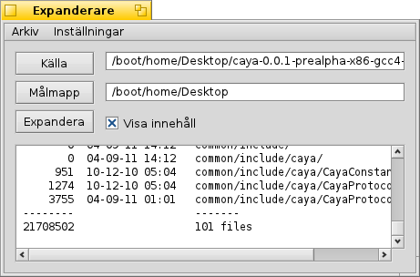
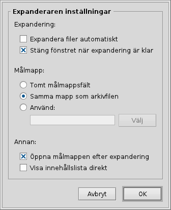

Svenska
Svenska Français
Français Deutsch
Deutsch Italiano
Italiano Русский
Русский Español
Español 日本語
日本語 Українська
Українська 中文 ［中文］
中文 ［中文］ Português
Português Suomi
Suomi Slovenčina
Slovenčina English
English Expanderare
Expanderare
| Deskbar: | Finns ej. Startas genom att dubbel-klicka på ett arkiv. | |
| Plats: | /boot/system/apps/Expander | |
| Inställningar: | ~/config/settings/Expander_Settings |
Expanderaren är ett litet verktyg som kan packa upp några av de vanligaste arkivformaten, exempelvis zip, gzip, bzip2, rar och tar.gz.
Dubbel-klicka på ett arkiv för att starta Expanderaren:

| ALT S | öppnar en fildialog för val av arkiv att packa upp. | |
| ALT D | öppnar en dialogruta för val av målmapp. | |
| ALT E | startar uppackningen. Kan avbrytas med ALT K. |
Du kan visa/gömma arkivets innehåll genom att bocka för/av Visa innehåll, eller använda tangentkombinationen ALT L.
Expanderaren kan bara packa upp hela arkiv.
Du kan inte expandera individuella filer eller lägga till/ta bort filer från ett arkiv.
Du kan inte expandera individuella filer eller lägga till/ta bort filer från ett arkiv.
Menyn eller ALT P öppnar en panel där några användbara inställningar kan göras.
